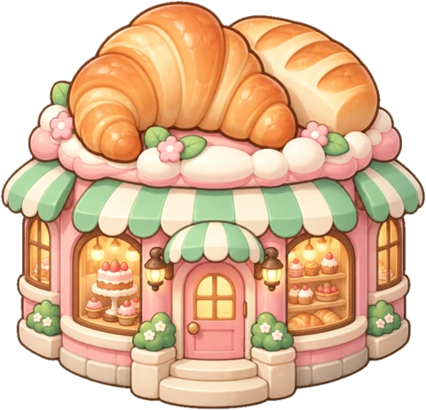
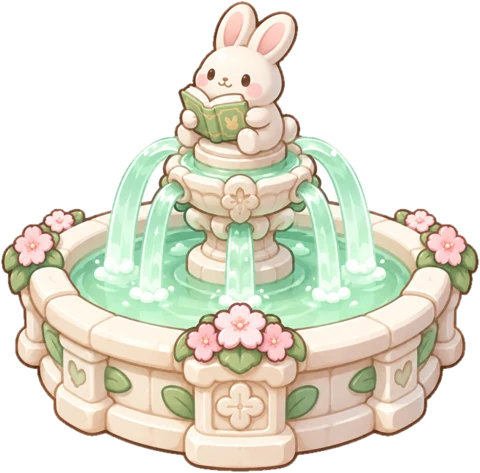
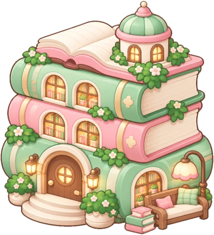
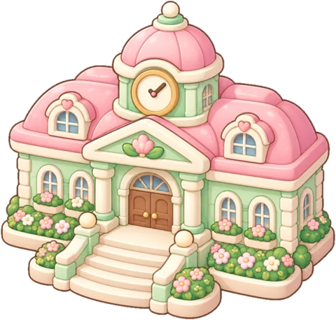
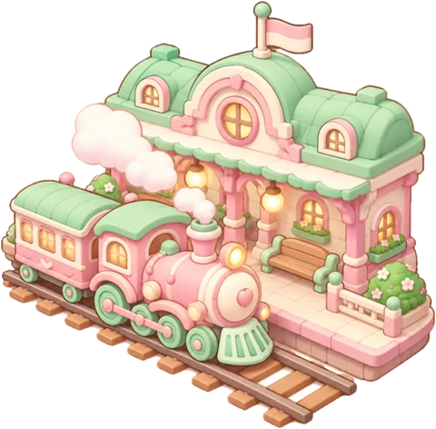
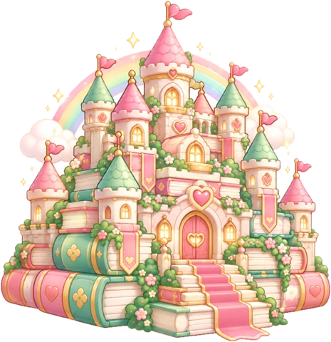

10/ 400
座房子 houses
再盖 15 座房子，喷泉 就会开张 · 15 more houses to open the Fountain
中心广场 Town Plaza
1 / 6 地标
Bakery · 开张啦 open

Fountain · 🔒 25

Library · 🔒 50

Town Hall · 🔒 100

Train Station · 🔒 200

Castle of Books · 🔒 400
人生小街 Life Lane
4 座
成事广场 Work Square
2 座思维科技园 Mind & Tech Park
3 座
历史山丘 History Hill
1 座怎么盖房子 How a house gets built
- 写下书名和笔记Tap ＋ Add a book. Notes stay in a private form
- 小兔子去查资料Claude searches the web, tidies and enriches your notes
- 新房子落成A house with a mindmap, famous lines, 5 takeaways and 5 push-backs